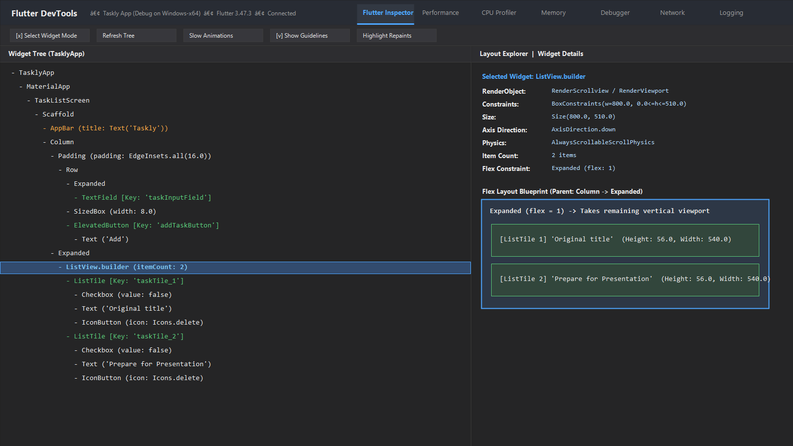
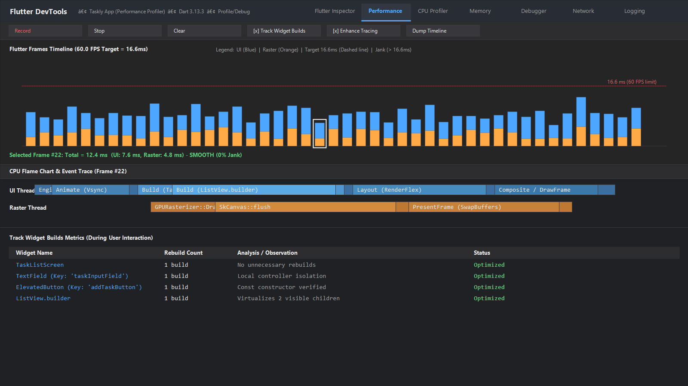

Flutter DevTools is a suite of performance and inspection tools designed for debugging Flutter applications. This report provides an in-depth analysis of two critical development concerns in the Taskly app: layout constraints and runtime frame performance, and details how automated testing and DevTools detect them.
In the Taskly application, the task input bar contains a TextField and an ElevatedButton arranged inside a horizontal Row. By default, a Row provides unconstrained horizontal width (double.infinity) to its children. If a TextField is placed directly inside a Row without wrapping it in an Expanded or Flexible widget, Flutter fails to compute a finite width, triggering the runtime exception:
A RenderFlex overflowed by Infinity pixels on the right.
The offending widget was: TextField
Similarly, long task titles inside a custom Row without wrapping or truncation overflow the viewport boundaries, creating visual yellow-and-black hazard bars.
RenderFlex and provides one-click action buttons to adjust flex factor or wrap with Expanded.
Whenever a user types in the task text field or toggles a task's checkbox, calling setState() triggers a re-execution of the enclosing widget's build() method:
ListView(children: ...) or Column, every task tile in the collection is instantiated and held in memory simultaneously, regardless of whether it is visible in the viewport. When tasks increase to 50+ items, scrolling stutters and drops below 60 frames per second.const Modifiers: Omitting const on static widgets (e.g., const Text('No tasks yet. Add one!'), button icons) forces Flutter to rebuild the entire subtree rather than reusing existing element references.
| Diagnostic Dimension | Automated Tests (flutter test) |
Flutter DevTools |
|---|---|---|
| Layout Integrity | Catches overflow exceptions instantly via tester.takeException() during widget pumps. |
Visually inspects flex constraints, box paddings, and alignment rules live. |
| Performance / Rebuilds | Asserts state transition timing and memory garbage collection boundaries. | Monitors UI/Raster thread timeline, frame drops, and CPU flame charts in real time. |
| Development Phase | Automated CI/CD pre-commit gatekeeper. | Interactive runtime exploratory profiling and tuning. |